長期トレンド
JKMとJEPXシステムプライスの推移グラフ
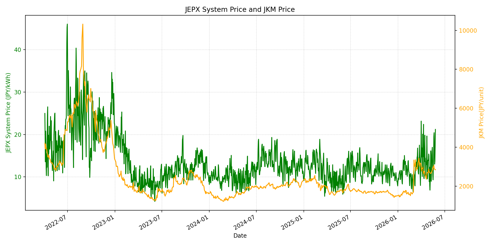
WTIの推移グラフ
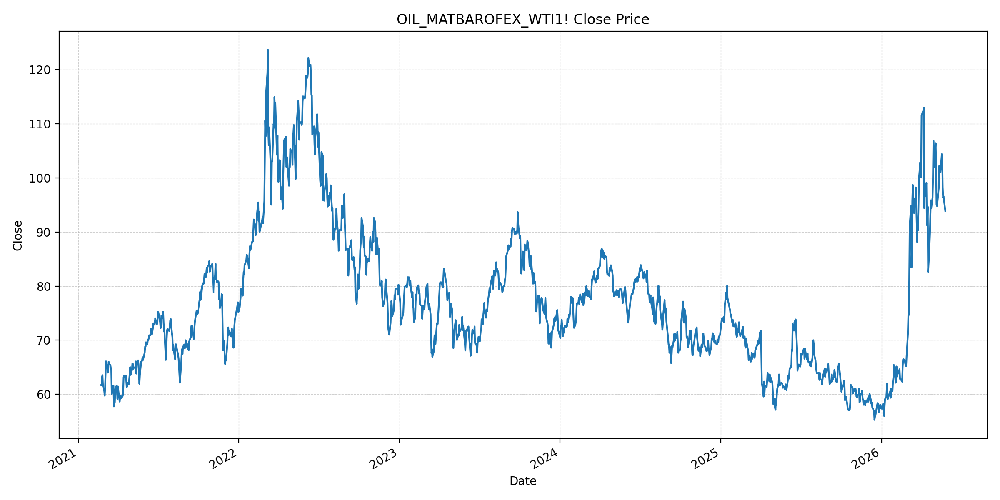
JEPXエリアプライスグラフ（直近一年分）
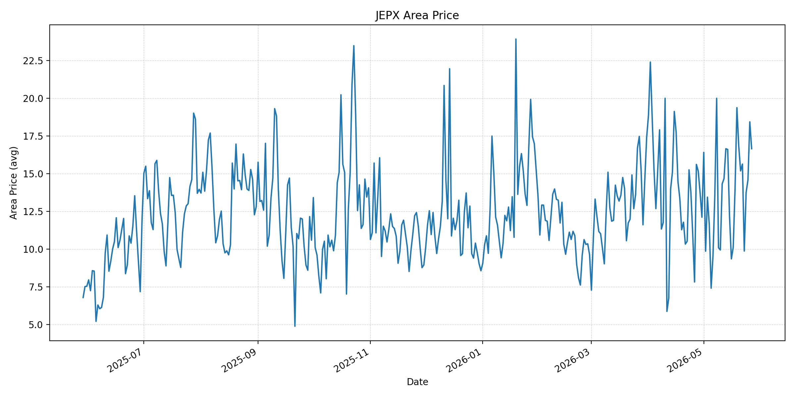
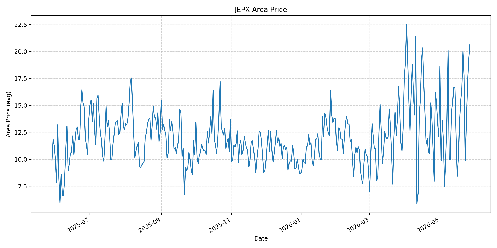
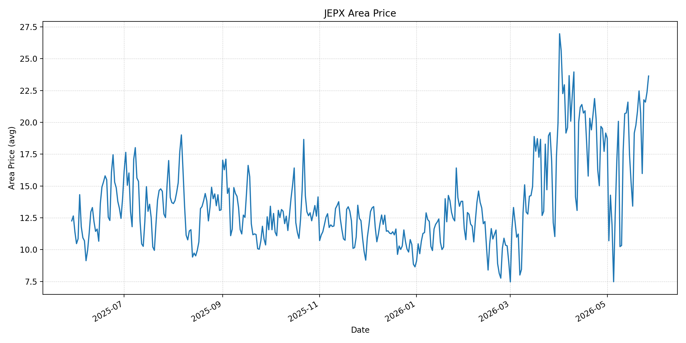
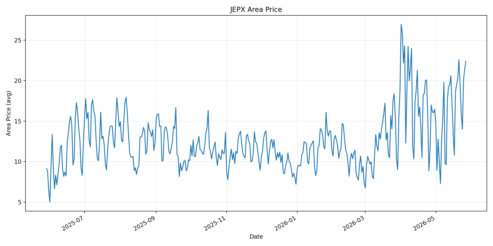
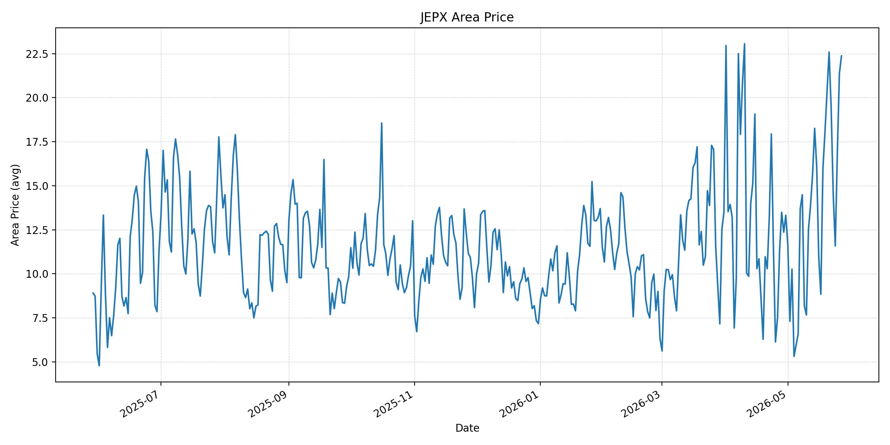
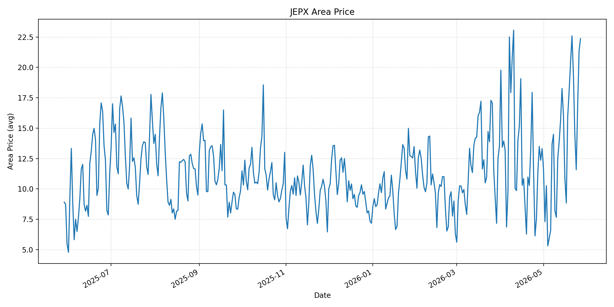
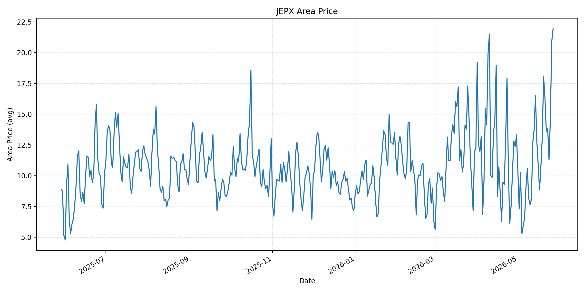
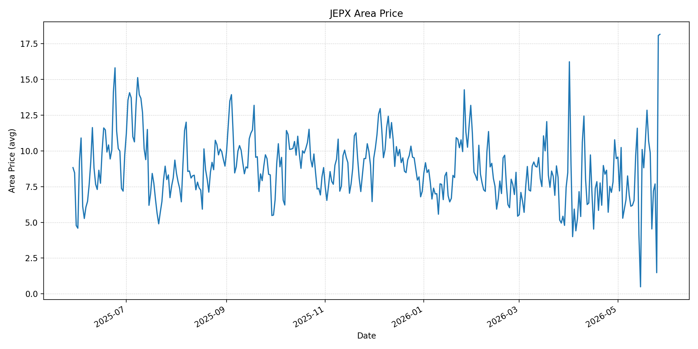
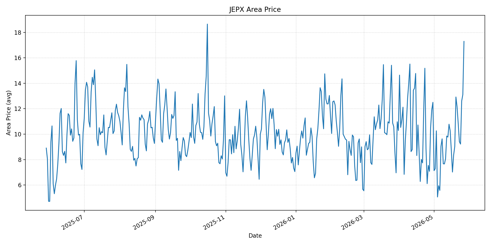
短期トレンド
JKMとJEPXシステムプライスの推移グラフ
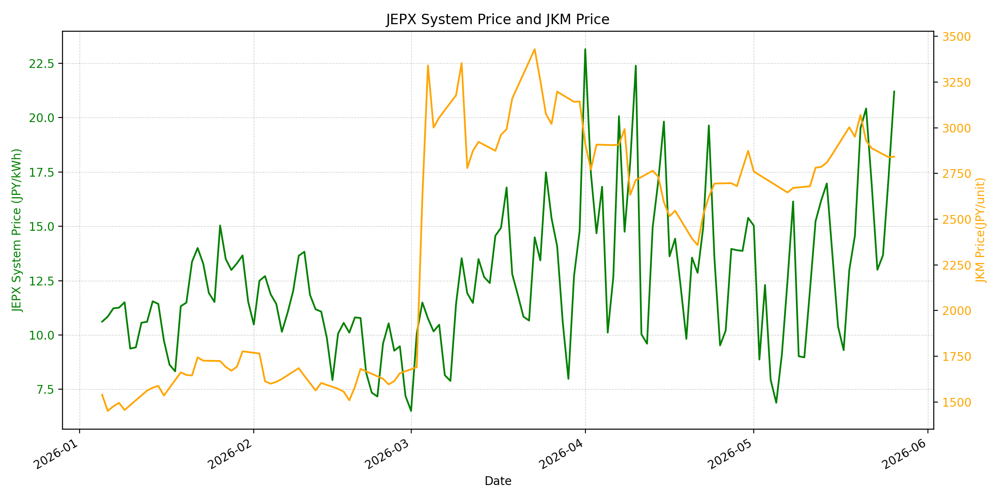
WTIの推移グラフ
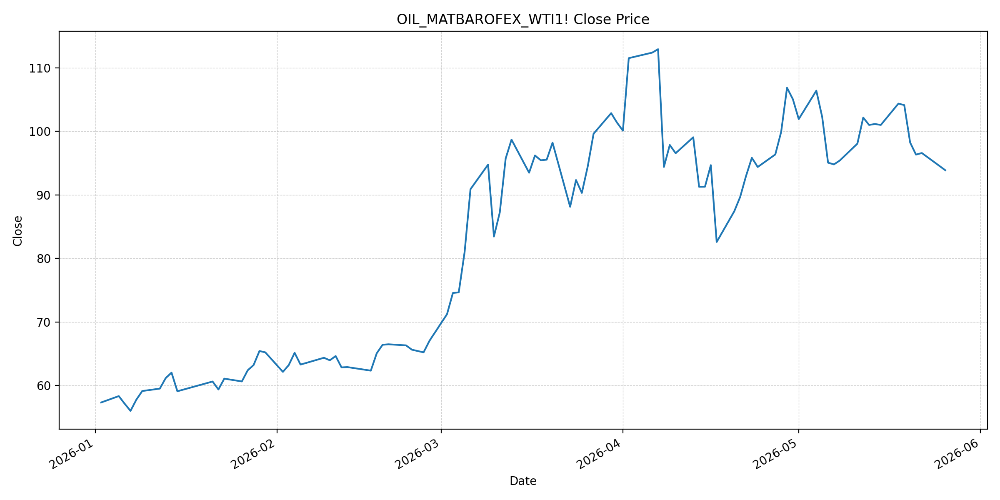
JEPXシステムプライス
JEPXは受渡日ベースの最新非空値で評価しています。最新値は 2026-05-27 分です。先週終値は 2026-05-20 時点の直近値、先月終値は 2026-04-30 時点の直近値で評価しています。
| エリア | 当日価格 | 前日価格 | 前日比（％） | 先週終値 | 先週比（％） | 先月終値 | 先月比（％） | 過去最高値 | 最高値比（％） |
|---|---|---|---|---|---|---|---|---|---|
| システム | 21.84 | 21.20 | 3.02 | 19.52 | 11.89 | 15.39 | 41.91 | 64.06 | -65.91 |
| 北海道 | 16.65 | 18.43 | -9.66 | 16.82 | -1.01 | 12.11 | 37.49 | 73.92 | -77.47 |
| 東北 | 20.61 | 19.25 | 7.06 | 16.60 | 24.16 | 12.11 | 70.19 | 84.92 | -75.73 |
| 東京 | 23.64 | 22.36 | 5.72 | 20.86 | 13.33 | 19.16 | 23.38 | 86.13 | -72.55 |
| 中部 | 22.37 | 21.45 | 4.29 | 20.33 | 10.03 | 16.47 | 35.82 | 52.06 | -57.03 |
| 北陸 | 22.37 | 21.37 | 4.68 | 20.33 | 10.03 | 13.32 | 67.94 | 46.48 | -51.88 |
| 関西 | 22.37 | 21.37 | 4.68 | 20.40 | 9.66 | 13.32 | 67.94 | 46.48 | -51.88 |
| 中国 | 21.94 | 20.90 | 4.98 | 18.03 | 21.69 | 13.32 | 64.71 | 46.48 | -52.80 |
| 四国 | 18.16 | 18.08 | 0.44 | 10.69 | 69.88 | 9.46 | 91.97 | 46.48 | -60.93 |
| 九州 | 17.29 | 13.11 | 31.88 | 12.92 | 33.82 | 12.50 | 38.32 | 40.54 | -57.35 |
LNG先物価格
最新値は 2026-05-26 の LNG(close) です。先週終値は 2026-05-19 時点の直近値、先月終値は 2026-04-30 時点の直近値で評価しています。
| 当日価格 | 前日価格 | 前日比（％） | 先週終値 | 先週比（％） | 先月終値 | 先月比（％） | 過去最高値 | 最高値比（％） |
|---|---|---|---|---|---|---|---|---|
| 2842.00 | 2839.00 | 0.11 | 2951.00 | -3.69 | 2874.00 | -1.11 | 10319.00 | -72.46 |
石油先物価格
最新値は 2026-05-26 の OIL(close) です。先週終値は 2026-05-19 時点の直近値、先月終値は 2026-04-30 時点の直近値で評価しています。
| 当日価格 | 前日価格 | 前日比（％） | 先週終値 | 先週比（％） | 先月終値 | 先月比（％） | 過去最高値 | 最高値比（％） |
|---|---|---|---|---|---|---|---|---|
| 93.89 | 96.60 | -2.81 | 104.15 | -9.85 | 105.07 | -10.64 | 123.70 | -24.10 |
ニュース
イラン情勢に関するニュース
- 2026年5月26日、APは、イランが米軍による南部ミサイル発射拠点と機雷敷設船への攻撃を「悪意」の表れとして非難し、停戦違反だと主張したと報じました。米側は自衛目的で抑制的な攻撃だったと説明しています。 参照: AP, 2026-05-26
- 同じAP記事では、ルビオ米国務長官が停戦延長とホルムズ海峡再開をめぐる協議には「数日」かかるとの見通しを示し、イラン側は一部インターネット接続の復旧を始めたとされています。 参照: AP, 2026-05-26
ホルムズ海峡経由の石油・LNGに関するニュース
- 2026年5月26日、Reutersは、米軍攻撃により停戦・ホルムズ再開合意への不透明感が増し、ブレント原油が約4％上昇したと報じました。イランは非イラン船舶の湾岸出入りをほぼ止め、世界の石油・LNGフローの約5分の1を圧迫しているとされています。 参照: MarketScreener/Reuters, 2026-05-26
- 同Reuters記事では、直近数日でLNGタンカー3隻とイラク原油を積む大型タンカーがホルムズ海峡を通過した一方、海峡再開は段階的となり、正常化には数カ月を要する可能性があると指摘されています。 参照: MarketScreener/Reuters, 2026-05-26
ホルムズ海峡経由でない石油・LNGに関するニュース
- 2026年5月26日、Axiosは、ホルムズ海峡の再開後も安全確認、保険、通航料、機雷除去に不確実性が残り、UAEのフジャイラ向けパイプライン拡張など海峡迂回インフラの重要性が高まると報じました。 参照: Axios, 2026-05-26
- Axiosは、油価高が米国生産者の増産意欲を高め、EIAの見通しでも2027年の米国産油量が上方修正されたと報じました。非ホルムズ供給の増加は中期的な価格抑制要因ですが、即時のアジアLNG供給制約を消すものではありません。 参照: Axios, 2026-05-26
日本国内のイラン戦争に関係するニュース
- 2026年5月26日、CNN.co.jpは、ホルムズ海峡を通過した石油タンカー「出光丸」が対イラン戦争開始後初めて日本に到着したと報じました。積載原油200万バレルは愛知県で精製される見通しです。 参照: CNN.co.jp, 2026-05-26
- CNN.co.jpは、日本政府が戦略石油備蓄を大規模に放出している一方、ペルシャ湾には日本関係船舶39隻がなお足止めされ、日本人乗船船も1隻あると報じました。国内供給の不安は緩和しつつも、完全には解消していません。 参照: CNN.co.jp, 2026-05-26
インサイト
ニュース事項による日本の電力市場への影響（短期：数日〜1週間）
- JEPXシステムプライスは 21.84 円/kWhで前日比 3.02%、先週比 11.89%、先月比 41.91% です。OIL(close)は 93.89 と前回比 -2.81% ですが、Reuters報道では米軍攻撃後にブレントが反発しており、燃料リスクの低下は一方向ではありません。
- 東京 23.64、中部・北陸・関西 22.37、中国 21.94 と高値圏が広がる一方、北海道は前日比 -9.66% です。ホルムズ協議が続いても通航・保険・船腹の制約が残るため、数日から1週間は燃料ニュースよりエリア需給で高値が残りやすいです。
- LNGは 2842.00 と前日比 0.11%、先週比 -3.69% です。LNGタンカーの一部通過は安心材料ですが、通常化には時間がかかるとの見方が残り、JEPXの短期下押し材料としてはまだ弱いです。
ニュース事項による日本の電力市場への影響（長期：1ヶ月〜半年）
- OILは先月比 -10.64% まで下がり、LNGも先月比 -1.11% と大きくは上がっていません。ホルムズ再開が段階的に進めば燃料費の上振れは抑えられますが、APとReutersの報道どおり協議・安全確認・機雷除去には時間がかかります。
- Axiosが指摘する迂回パイプラインと米国増産は中期的な価格抑制要因です。ただし、海峡経由を完全に置き換えるには不足し、非ホルムズ供給への依存拡大は輸送距離、保険、契約柔軟性のコストを伴います。
- 出光丸の到着と備蓄放出は国内供給の下振れリスクを減らしますが、日本関係船舶の足止めは残っています。1ヶ月から半年の電力市場では、原油価格の低下よりもLNG物流正常化の遅れと夏季需要の重なりが、JEPXの高値持続リスクとして残ります。